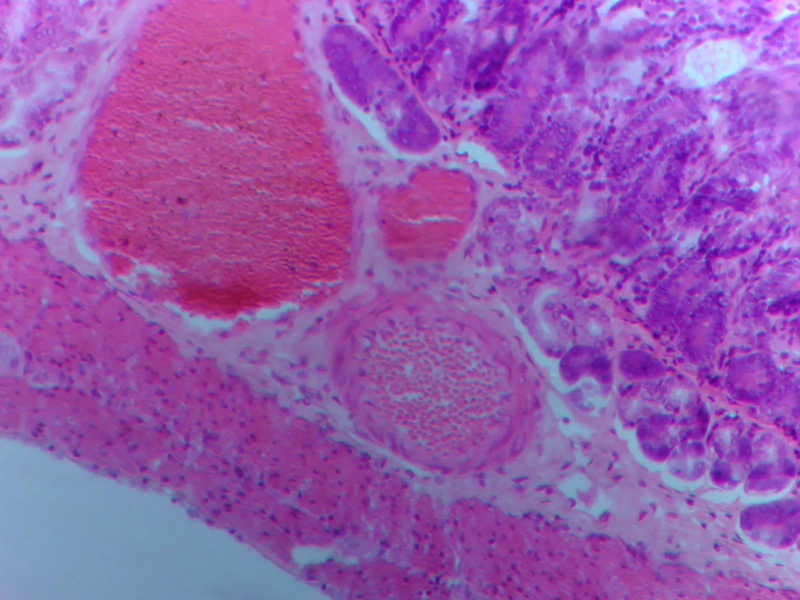
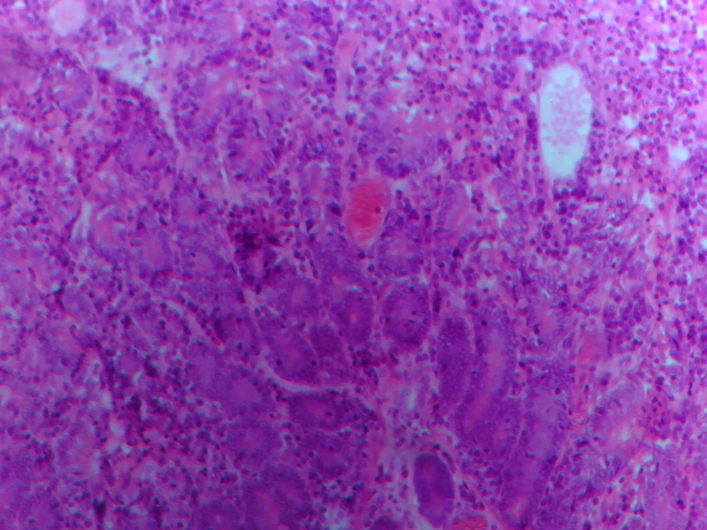
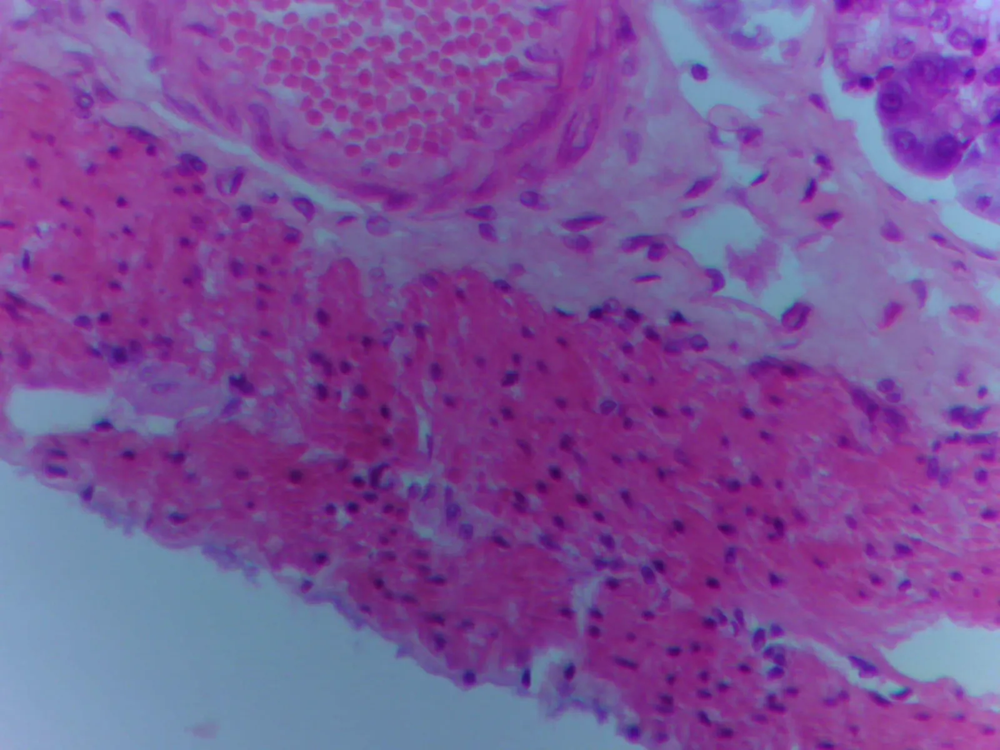
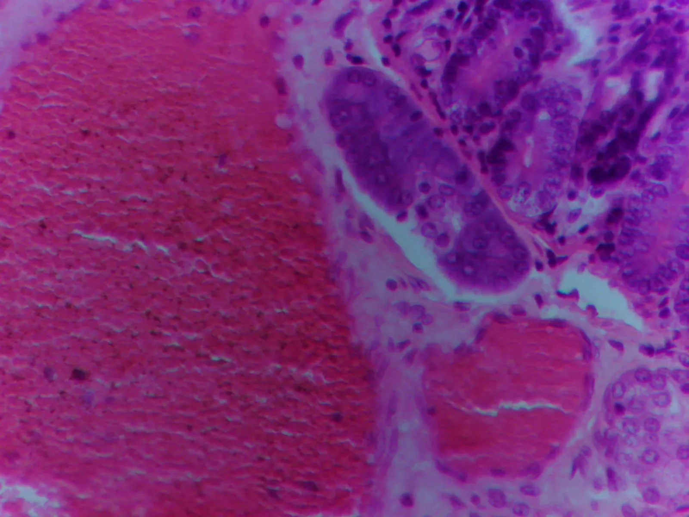
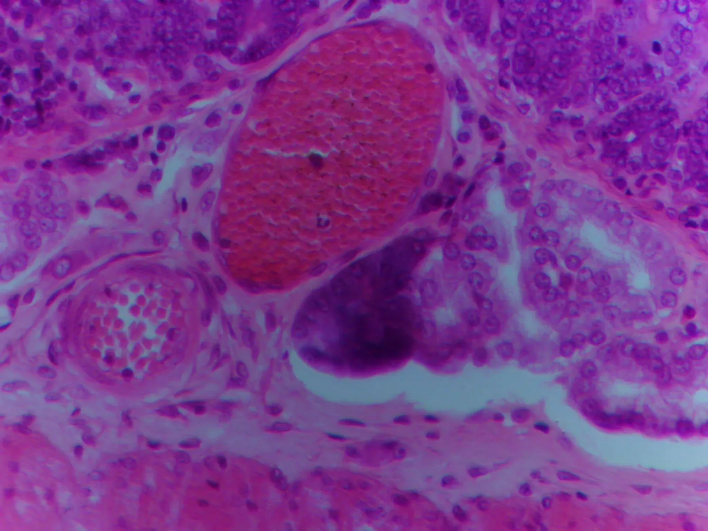
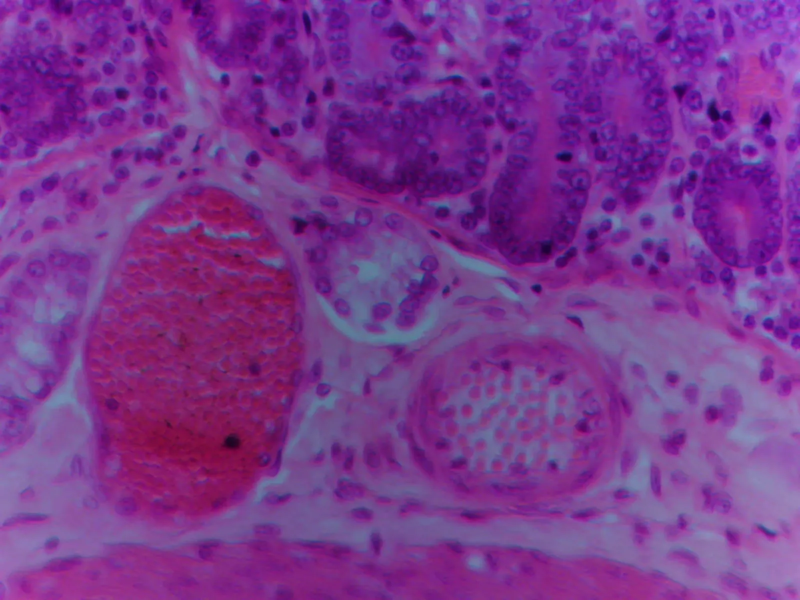

Lâmina 22 · A classificar
Lâmina 22






Toque na imagem para ampliar. No computador, use as setas do teclado para trocar de imagem.
Lâmina 22 · A classificar






Toque na imagem para ampliar. No computador, use as setas do teclado para trocar de imagem.